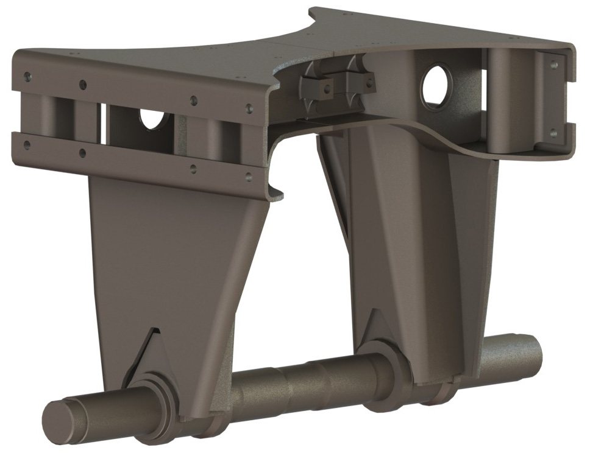
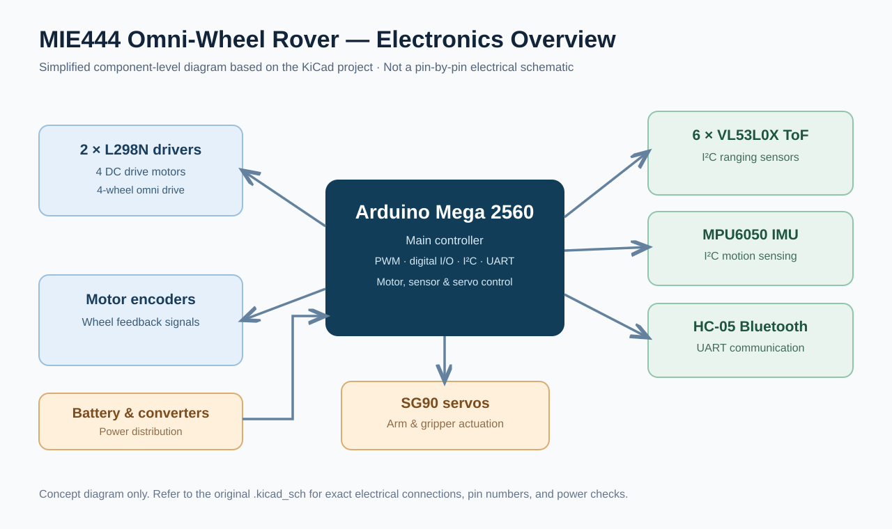

Projects
Every project below opens a standalone page with the engineering problem, my contribution, methods, results and original images. No JavaScript needed.
_edited_edited_edited.jpg)
Antenna torque-balancing system
An antenna tracking system needed a counterbalancing approach to accommodate the weight and torque of the moving assembly.
View case study →
FDM 3D printer
Conceptualize an affordable entry-level FDM printer while balancing movement accuracy, speed, and manufacturing constraints.
View case study →
Gearbox design
Create a feasible gearbox with the appropriate gears, shaft layout and housing.
View case study →_page-0001.jpg)
Can-opener redesign
Study a manual can opener and improve the torque transmitted by its gear mechanism.
View case study →
Screwdriver mode-switch mechanism
Develop a mechanism that switches a screwdriver between powered operation and manual control.
View case study →
Jigsaw mechanism
Develop and document a jigsaw mechanical assembly.
View case study →
V6 engine CAD assembly
Understand engine mechanisms and component relationships through a detailed virtual assembly.
View case study →
Trunnion welding cell improvement
Adapt a trunnion welding production cell to lower demand while using less floor space and maintaining productive flow.
View case study →Emergency Braking System | UTFR
Mount pneumatic emergency braking pistons safely within packaging constraints while validating structural performance under braking loads and pressure.
View case study →Operations tools and continuous improvement | Collins Aerospace
Improve shop-floor information flow, standardized work and adoption of operational digital tools.
View case study →
Four-wheel omni-directional rover | MIE444
Integrate movement, sensing, communication and control for a student-built omni-wheel mobile robot.
View case study →Banking-sector consulting engagement | UTCA
Contribute to a consulting engagement in the banking sector through the University of Toronto Consulting Association.
View case study →
Brighter Pages education initiative
Improve access to educational resources for underserved students.
View case study →